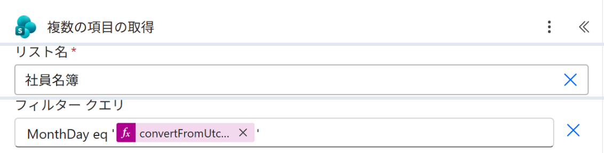
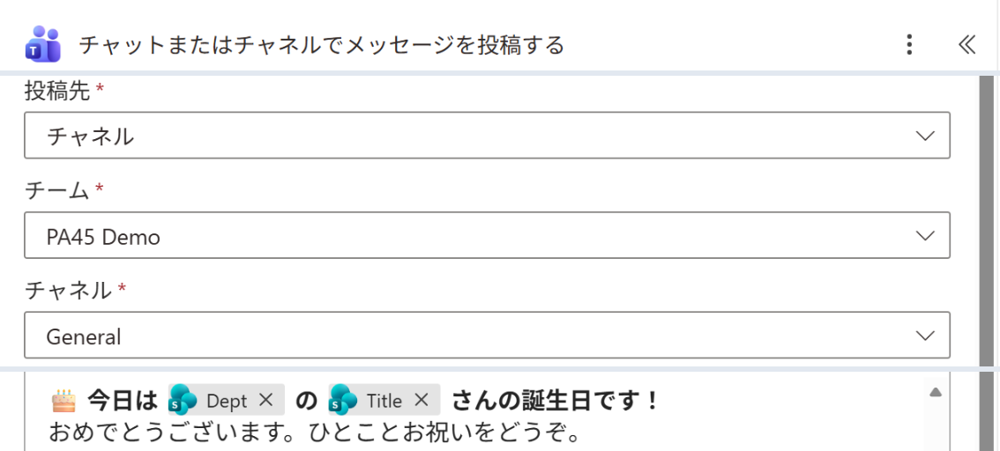

Vol.148-4
要の設定は月日のフィルターと投稿先

フィルターの値は文字列なので、式の前後を ' で囲みます。
投稿先をチャネルにすると、フロー ボットの投稿にみんなが返信でお祝いを書けます
投稿先をチャネルにすると、フロー ボットの投稿にみんなが返信でお祝いを書けます

A
B
A
リスト名 社員名簿
B
MonthDay eq '式'。式は convertFromUtc(utcNow(),'Tokyo Standard Time','MM-dd')
C
D
C
投稿先 チャネル、チームとチャネルを選ぶ
D
本文に Dept（部署）と Title（氏名）を差し込む
同じ形で契約の更新日や資格の期限の前日通知にも使える
出典：Microsoft Learn